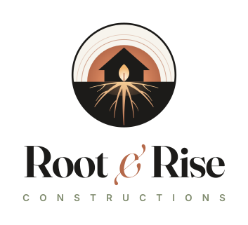
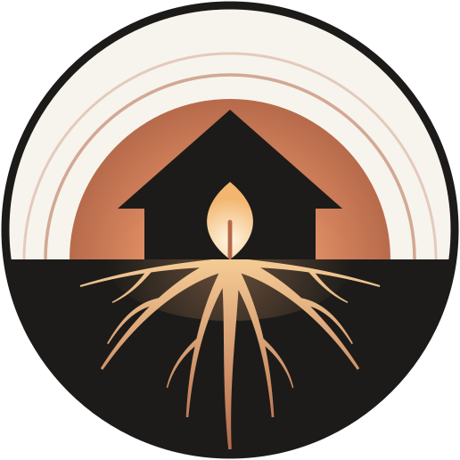
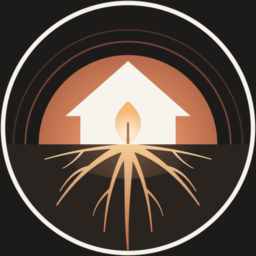
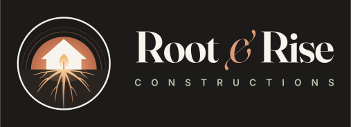

You can read it in one glance: a house, a rising sun, roots. Look a moment longer and the doorway turns out to be a glowing leaf, like a lamp lit inside. Nature, light, and a home treated as something sacred, held in one circle.


The idea the mark is built on, and the way every home is built.

